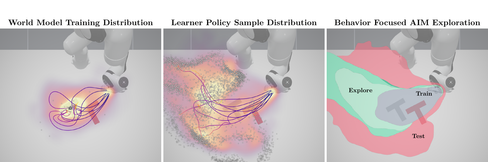
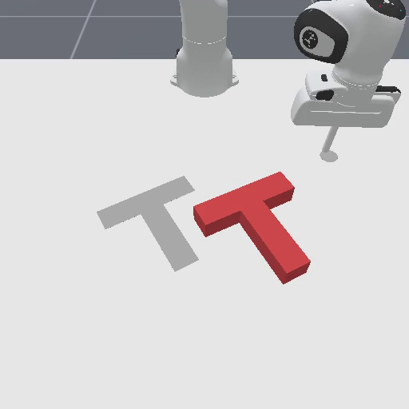
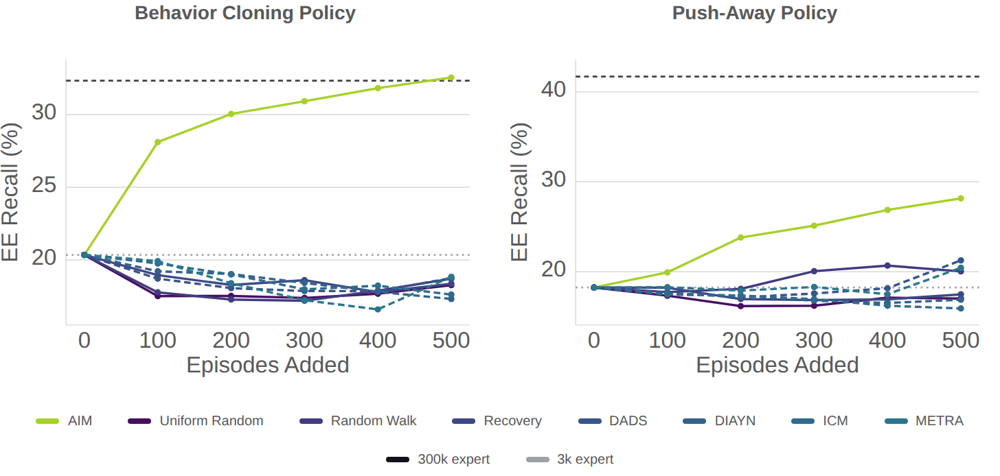

Problem
Paper §1World models lack useful controllability.
In the last couple years, world models (predictive models of the future based on one's actions) have gone from "showing signs of life on domain-specific problems" to "possibly simulates physics flawlessly."
In robotics, this is pretty interesting: a lot of cool work has pointed at the power of training policies in scalable simulation despite the sim2real gap. What if we could eliminate this gap entirely by data-driven simulation of the real world?
But generating plausible video is very different than predicting action consequences reliably. This is sometimes called the controllability of the world model, relating to the influence a policy's actions have on the outcomes in the world model. This work and contemporaneous work by N. Hansen and X. Wang have found that varying the training distribution of a world model changes the predictive errors of the model.
Try it: compare predictions on BC failuresFigure 1 · Following the commands—or the expert?
Action influence versus fidelity
Four Rooms navigationSince we want data-driven simulators for improving policies, we are particularly interested in controllability, separate from pure prediction error. In a discrete environment (Four Rooms) where this can be measured exhaustively, we find controllability/action influence is a pretty good proxy for fidelity anyways.
This leads our work to answer three key questions: what properties of data influence downstream world model controllability? And can we actively collect for these properties? Can we do it without training a world model in the first place? Our work suggests the answer to all three is yes.
Framing
Paper §5.2What properties of data influence downstream world model controllability?
The deficiency of expert demonstration and non-active data collection has a pretty simple explanation: expert demonstrations in high-dimensional action spaces (e.g. human teleoperation) are efficient with their actions and tend to solve the same task in similar ways each time.
A downstream learner policy or task has no reason to solve their task with similar states or actions to the expert unless their task is identical, and this results in poor coverage of the learner sample distribution.
In high-dimensional search spaces with non-uniform initialization, trying to cover this deficiency through random behavior runs into the curse of dimensionality: interesting environments allow for a lot of behavior, most of which is useless, and in robotics, randomly stumbling on an interesting part of the environment is pretty unlikely.
Figure 2 · Training data and learner behavior need not match

Figure 3 · Different data reveal different behaviors
Some form of action collection is critical, but what determines utility? We show in our work that a learned model is bound in what action consequences it can explain by the mutual information of its dataset. If the model is good at extracting information from a dataset, then we can ignore it entirely and optimize the dataset directly, independent of any specific model.
The action-information bound
Explained action information compares the model's action-conditioned prediction with its prediction averaged over possible actions. On real transitions drawn from one fixed state distribution ρ, action policy π, and transition kernel:
p̂θ,π(s′ | s) = ∫ π(a | s) p̂θ(s′ | s,a) da
Ĉρ(π) = Eρπp [log p̂θ(S′ | S,A) − log p̂θ,π(S′ | S)] ≤ I(A; S′ | S)
With finite expected KL terms, the gap is the expected KL divergence between real and model-induced inverse-action posteriors. The learned score can be negative. Theorem 1 compares quantities on the same distribution; it is not a universal ceiling on test-time extrapolation or a claim that pretraining cannot help. Pixel recall in the videos is not an estimate of this information quantity. See Appendix A.1.
Solution
Paper §§3–4Optimize the data, not the world model
With this insight, that dataset mutual information relates to the best controllability a model can produce, we do a bit of analysis to derive a reward function to directly optimize this quantity in an ideal contextual bandits setting:
rAIMk = log qk(a | s,s′) − log βk(a | s) + log ρeval(s) − log dk(s)
Excitingly, if our practical implementation is similar enough to the ideal contextual bandits problem this is derived from, optimizing this reward has higher mutual information than the previously collected data, and thus a higher upper bound on world model explainable action information. Full mathematical details are in the paper.
This reward popping out is pretty neat: if ρeval is uniform, then this looks like a classic mutual information reward and state coverage curiosity reward.
We estimate these learned reward functions with any prior collected data with flow matching likelihood estimation and self distillation. These allow us to train RL policies to focus collection of a batch of data on the highest information utility samples, which we can add back into our dataset for the next round of reward estimation and collection.
The reward and practical optimizer
AIM estimates inverse dynamics qk(a | s,s′), an action prior βk(a | s), and state density dk(s). Its reward is:
rAIMk = log qk(a | s,s′) − log βk(a | s) + log ρeval(s) − log dk(s)
The practical state reference is uniform over a bounded workspace, making the state term a novelty reward. Flow-based density models and amortized divergence heads score replay transitions. We standardize the two terms separately and fit an IQL critic and advantage-weighted flow-policy actor.
With exact replay densities and unit policy-KL penalty, the contextual optimizer tilts β toward high expected reward. Its guarantee requires the theorem's support and finiteness assumptions. The state-only term cancels when normalizing actions at a fixed state; it affects visitation in the sequential RL approximation. Practical learned rewards and sequential updates do not inherit the exact contextual guarantee. Reward estimates stay fixed within a policy-fitting round and are refreshed between rounds.
Walk through one AIM collection round
Click a line or a cycle station, or step through the procedure. The reward-fitting call opens Algorithm 2 and returns to the collector.
distribution Deploy on robot

Symbolic walkthrough state
Results
Paper resultsThe Promising Power of Small Data
We test different data collection controllability with two downstream learner policies: a Push-T behavior cloning (BC) policy, and a Push-Away policy that moves the Tee away from the goal. Starting with roughly 3,000 expert trajectories, we give collectors five 100-episode rounds in Push-T, and compare AIM with expert, random, recovery, and intrinsic exploration-based collection. On the original short-horizon PushT BC test, 500 AIM trajectories match the 300,000-expert model on end-effector recall: roughly 85× fewer training episodes in total. On push-away, AIM approaches the performance of the 19k-expert. Both show significant data scaling efficiency improvements over alternate data collection efforts in high-dimensional manipulation:
Figure 5 · Improving controllability via active data collection
Original evaluation · PushT H10
For a more indepth analysis and human A/B preference testing, we train larger, higher resolution models with longer horizons (H=33). We also introduced a BC failure policy, that alternates between BC and push-away to simulate a moderately weak policy somewhere between the two extremes above. Human preference consistently prefers the AIM data mixtures, which is consistent with the controllability and fidelity recall metrics as well. See our paper for full experimental details!
Behavioral fidelity · Aggregate human preference
PushT H33 · Table 1Score values and reported intervals
| Training data | Arena score ± reported interval |
|---|